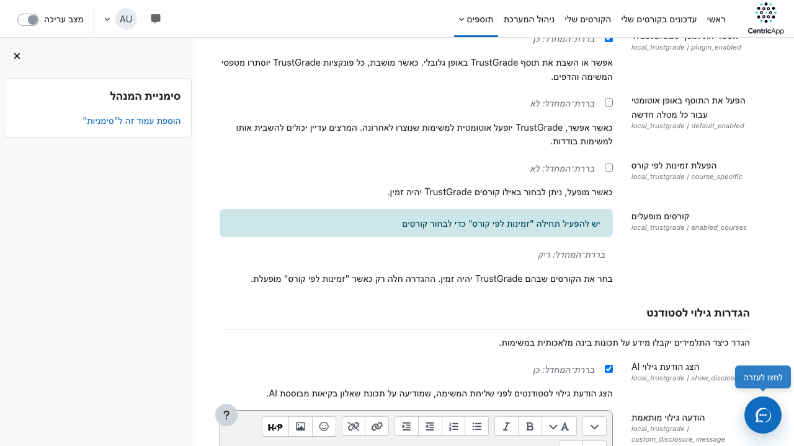
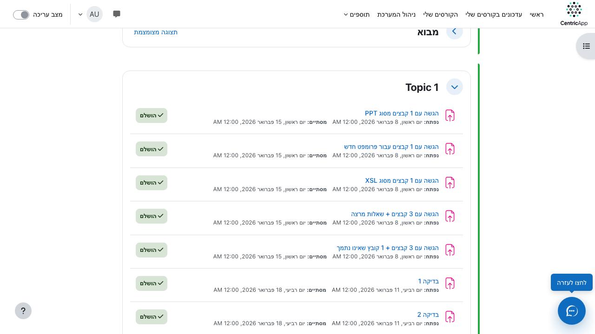
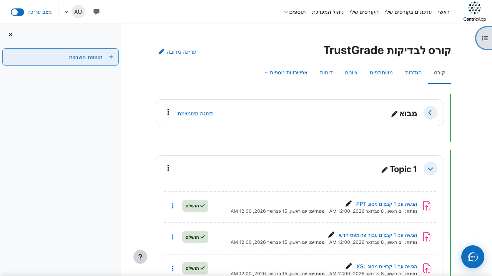
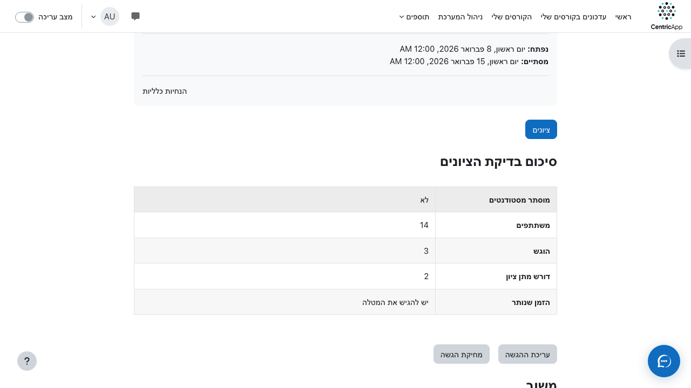
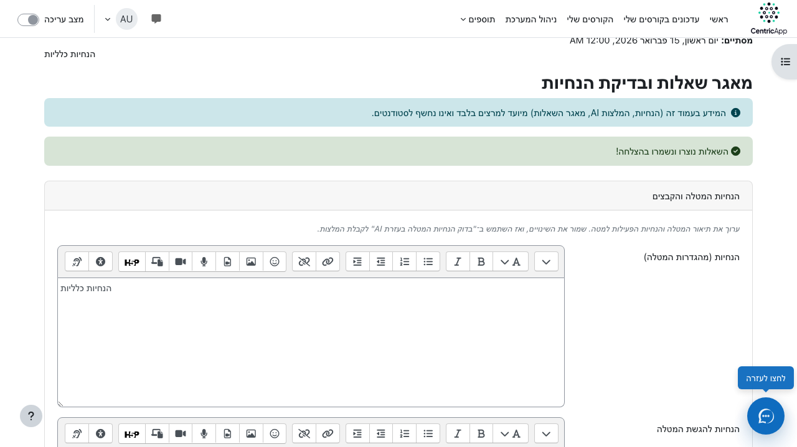
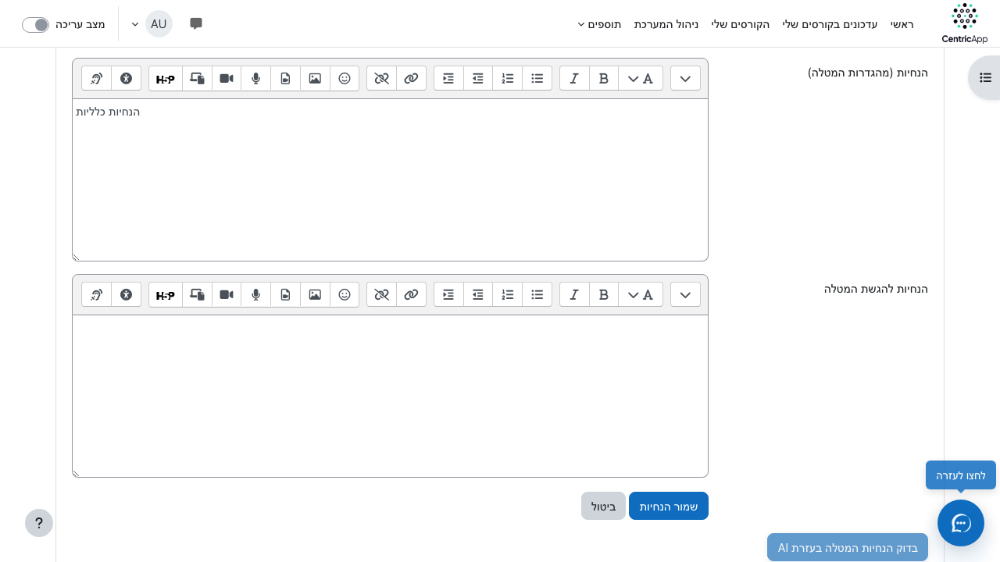
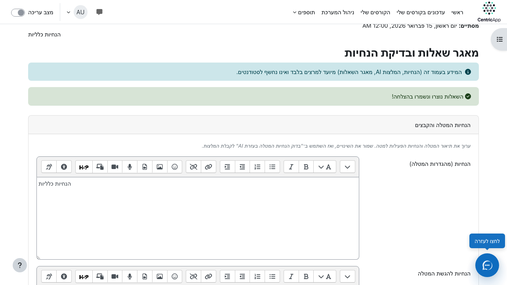
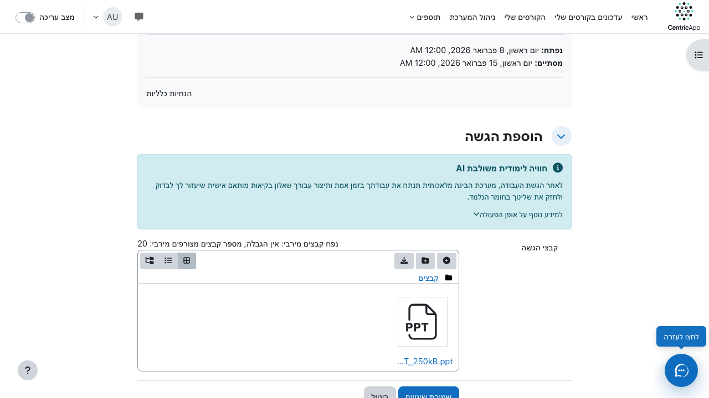
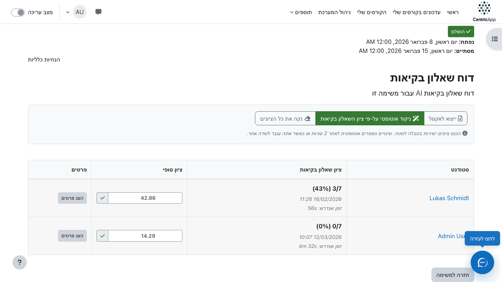

מדריך שימוש ב-TrustGrade
TrustGrade הוא תוסף ל-Moodle שמאפשר יצירת שאלוני בקיאות אוטומטיים מבוססי AI: לאחר שהסטודנט מגיש מטלה, המערכת יוצרת שאלון קצר בהתאם לתוכן ההגשה ולמאגר השאלות של המרצה. המדריך מסביר שלב־אחר־שלב כיצד להפעיל את התוסף ולהשתמש בו, כולל צילומי מסך מדויקים מהמערכת.
קורס לדוגמה במדריך: קורס (id=63) · מטלה לדוגמה: מטלה (id=356).
דרישות מקדימות
יש להפעיל את TrustGrade בהגדרות האתר (הגדרות → תוספים → TrustGrade) ולוודא שה-Gateway (כתובת וטוקן) מוגדר. אם התוסף מוגבל לפי קורסים, יש להוסיף את הקורס לרשימת הקורסים המופעלים.
הפעלת התוסף במערכת
עבור אל הגדרות אתר → תוספים → TrustGrade, סמן "אפשר את תוסף TrustGrade" ושמור. בהגדרות ה-Gateway הזן endpoint ואסימון אם נדרש.

איור 0: מסך ההפעלה והגדרות TrustGrade במערכת.
הוספת פעילות מסוג מטלה
בעמוד הקורס (למשל course/view.php?id=63) הפעל "הפעל עריכה", ולאחר מכן בחר "הוסף פעילות או משאב" ובחר "מטלה".
שלב 1: כניסה לקורס והפעלת עריכה
נכנסים לעמוד הקורס ולוחצים על כפתור הפעל עריכה (או "Turn editing on").

איור 1: עמוד הקורס – לפני הוספת מטלה. אלמנט: אזור התוכן הראשי של הקורס.
שלב 2: הוספת פעילות – בחירת מטלה
לוחצים על "הוסף פעילות או משאב" (בתוך סעיף או בתחתית העמוד), ובחלון שנפתח בוחרים מטלה (Assignment) ולוחצים "הוסף".

איור 2: חלון הוספת פעילות – בחירת "מטלה".
שלב 3: הגדרת המטלה הבסיסית
ממלאים שם המטלה, תיאור (אופציונלי), תאריכי הגשה וכדומה, ולוחצים "שמור וחזור לקורס" או "שמור והצג".

איור 3: טופס עריכת המטלה – שדות בסיסיים.
הפעלת TrustGrade במטלה
אחרי יצירת המטלה (או בעריכה של מטלה קיימת), פותחים את לשונית TrustGrade (או "מדד איכות אקדמית") בהגדרות המטלה, ומסמנים "הפעלת הרכיב" (TrustGrade enabled). ניתן גם להגדיר חובת השלמת שאלון בקיאות לפני גישה לעמודים אחרים.
לשונית TrustGrade בהגדרות המטלה
בעמוד עריכת המטלה (mod/assign/view.php?id=356&action=editsettings או דרך "הגדרות" במטלה) עוברים ללשונית TrustGrade ומפעילים את התוסף למטלה זו.

איור 4: לשונית TrustGrade – הפעלת הרכיב והגדרות נוספות.
מאגר שאלות ובדיקת הנחיות
מתפריט המטלה (גלגל השיניים) בוחרים מאגר שאלות (או "Question bank"). שם ניתן לערוך הנחיות המטלה, לבדוק הנחיות עם AI, ולצפות בעריכת שאלות מאגר המרצה.
כניסה למאגר השאלות
מעמוד צפייה במטלה (mod/assign/view.php?id=356) לוחצים על תפריט ההגדרות (גלגל שיניים) ובוחרים מאגר שאלות (TrustGrade Question bank).
איור 5: תפריט המטלה – בחירת "מאגר שאלות".
עמוד מאגר השאלות והנחיות
בעמוד מאגר השאלות מופיעים שני אקורדיונים: הנחיות המטלה והקבצים (עריכה, בדיקת הנחיות עם AI, המלצות) ו־יצירת שאלות לשאלון בקיאות באמצעות העלאת קבצים. טבלת השאלות מציגה את השאלות הקיימות עם אפשרויות עריכה ומחיקה (אייקונים).

איור 6: עמוד מאגר השאלות – הנחיות, AI, וטבלת שאלות.
בדיקת הנחיות עם AI
באקורדיון "הנחיות המטלה והקבצים" עורכים את תיאור המטלה והנחיות הפעילות, שומרים, ואז לוחצים בדוק הנחיות עם AI. המערכת מחזירה המלצות לשיפור ההנחיות.

איור 7: כפתור "בדוק הנחיות עם AI" והמלצת AI.
יצירת שאלות מהקבצים
באקורדיון "יצירת שאלות לשאלון בקיאות באמצעות העלאת קבצים" ניתן להעלות קבצים (PDF, Word וכו'), להזין הוראות אופציונליות, ולבקש יצירת שאלות. השאלות שנוצרות מתווספות למאגר השאלות של המטלה.
פתיחת האקורדיון והעלאת קבצים
פותחים את האקורדיון השני, מעלים קבצים בשדה "העלאת קבצים", מגדירים מספר שאלות (אופציונלי: הוראות), ולוחצים "צור שאלות" (או "Generate questions").

איור 8: טופס יצירת שאלות מהקבצים.
תהליך הסטודנט: הגשה ושאלון בקיאות
הסטודנט נכנס למטלה, מעלה הגשה (או שומר טיוטה). אם מופעל "דורש לחיצה על כפתור הגשה", לאחר לחיצה על "הגש למתן ציון" ואישור – המערכת יוצרת שאלון בקיאות. הודעת גילוי AI מוצגת לפני ההגשה (אם הוגדרה). לאחר שהשאלון מוכן, הסטודנט מופנה אליו או נכנס אליו דרך המטלה.
עמוד ההגשה והודעת הגילוי
בעמוד ההגשה הסטודנט רואה את טופס ההגשה ו(אם הוגדר) את הודעת הגילוי של TrustGrade – הסבר על שימוש ב-AI ושאלון הבקיאות.

איור 9: עמוד הגשת המטלה עם הודעת גילוי TrustGrade.
שאלון הבקיאות
אחרי שהשאלון מוכן, הסטודנט נכנס לממשק השאלון – שאלות רב־ברירה בהתאם להגשה ולמאגר השאלות, עם טיימר והגבלת ניווט לפי ההגדרות.

איור 10: ממשק שאלון הבקיאות לסטודנט.
דוחות וציונים
מתפריט המטלה ניתן לפתוח TrustGrade Report – דוח עם ציוני שאלון, ציונים ידניים והערכת הגשה (AI). שם גם ניתן להפעיל ניקוד אוטומטי לפי ציון השאלון.
דוח TrustGrade
בתפריט המטלה בוחרים "TrustGrade Report" וצופים בטבלת המשתתפים, ציוני השאלון, והערכות. ניתן לייצא ל-Excel.

איור 11: דוח TrustGrade – ציונים והערכות.
יצירת צילומי המסך
צילומי המסך במדריך נוצרים עם הסקריפט docs/moodle_screenshot.js. הסקריפט מתחבר ל-Moodle, נכנס לדף המבוקש, ויכול ללחוץ על אלמנטים (selectors) לפני צילום המסך. כל הפקודות מרוכזות בקובץ docs/guide_he/screenshot_commands.sh – הרצה מתוך תיקיית docs:
cd docs
node moodle_screenshot.js https://dev.moodle https://dev.moodle/course/view.php?id=63 guide_he/screenshots/01-course-view.png "#region-main"
node moodle_screenshot.js https://dev.moodle "https://dev.moodle/course/view.php?id=63" guide_he/screenshots/02-add-activity.png ".activity-add"
# ... (שאר הפקודות בקובץ screenshot_commands.sh)
יש לעדכן את שם המשתמש והסיסמה בתוך moodle_screenshot.js אם נדרש, ולהריץ את הפקודות כשהמערכת זמינה. הסקריפט screenshot_commands.sh יוצר אוטומטית את התיקייה guide_he/screenshots. לאחר יצירת הקבצים, התמונות יופיעו אוטומטית במדריך.
רשימת פקודות מלאה ליצירת צילומי מסך (לפי אלמנטים)
מדריך TrustGrade – גרסה 1.0 · קורס לדוגמה: id=63 · מטלה לדוגמה: id=356